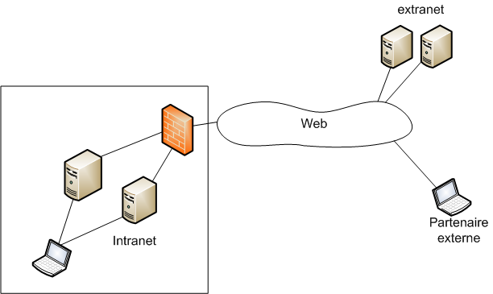

An extranet is a controlled private computer network that allows communication with business partners, vendors and suppliers, or an authorized set of customers. It extends an intranet to trusted outsiders. It provides access to needed services for authorized parties, without granting access to an organization's entire network. It can be implemented securely, either with dedicated links or as a VPN.
